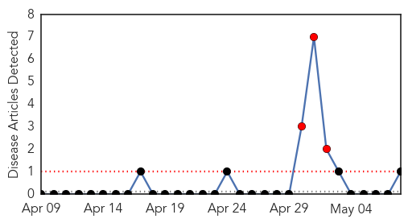
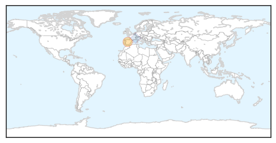

Bubonic Plague
30-Day Web Trend
3 alerts, 0 warnings

30-Day Twitter Trend
0 alerts, 0 warnings

Article Locations
Article Confidences

Top Articles:
- 0.519
- Plague in Jerome
Top Tweets:
-
No tweets found for May 08, 2015
Swine Flu
30-Day Web Trend
0 alerts, 0 warnings

30-Day Twitter Trend
2 alerts, 0 warnings

Article Locations
Article Confidences

Top Articles:
Top Tweets:
- 0.614
- Don't stigmatize when naming for new diseases, @WHO says, pointing to MERS & swine flu as names to avoid. http://t.co/wBG8fWqNIo 1/2
- 0.592
- The use of disease names such as ‘swine flu’ has stigmatized certain communities or economic sectors